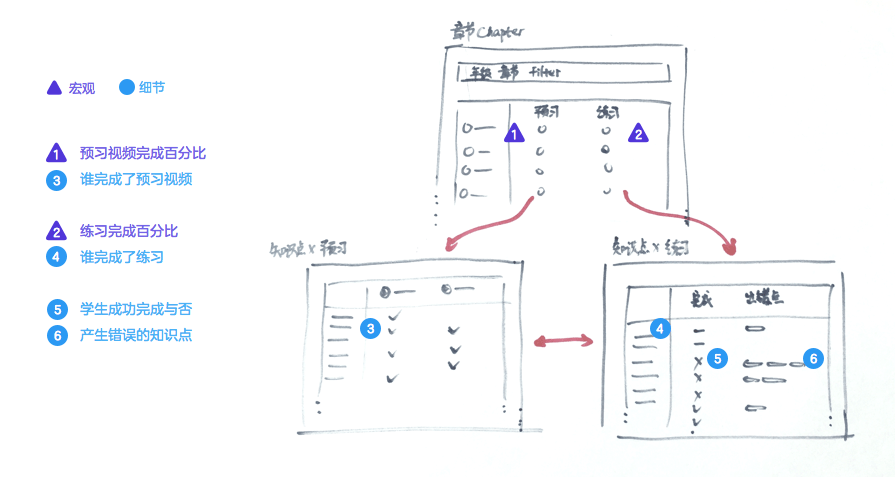

作为洋葱数学的一分子，我们始终共享一种理念：做在线教育，不是把传统线下的教学强行搬到线上，而是对传统教学的增强。我们知道，传统教学活动包括了两方的三个环节，即学生「学习知识点」、「完成练习」，老师「根据学生练习结果进行反馈指导」。洋葱数学已经依靠可反复观看的微视频，以及教研组精选的课后练习，实现了增强学习和练习两个环节。顺理成章地，我们把目光放在教师上，看看这里有什么样的产品机会。
产品假设
通过和老师的接触和分析，我了解到，传统教学中老师想要评估学生学习的结果，只能通过留作业－判作业。这通常会跨越一天或几天。因此我们提出了这样的假设，如果老师能够看到学生学习的数据，「根据学生练习结果进行反馈指导」这个环节将因此变得持续化，更即时，从而提升教学活动。
验证假设
首先，为了了解老师们最关心的指标、需要数据的细致程度等等，我和几个种子教师用户进行了访谈。老师们通常关注学习完成情况、练习完成和练习质量，为传达这些指标，需要转化成相应的数据项，如下图

我并不希望把数据一股脑全倒给老师，在深入设计细节前，我设定了两条原则。1. 宏观信息优先， 2. 按需查看细节。我希望秉持这个原则，通过每一步有节制的展现信息，让教师用户查看数据时更有条理。按照学成完成学习才能产生数据的因果关系，我将完成百分比定义为「宏观数据」，其他定义为「细节数据」，并勾画出用户从宏观到细节查看数据的流程。

接下来，我画低保真的草图，尝试不同页面的数据表现方式。这样可以比较快速得比对不同版本的优劣，并且很容易的从他人获得反馈。然后我让前面提到的教师用户，对着草图模拟日常使用的场景，提出反馈意见，如此几次迭代，趋向最终设计。
最终设计